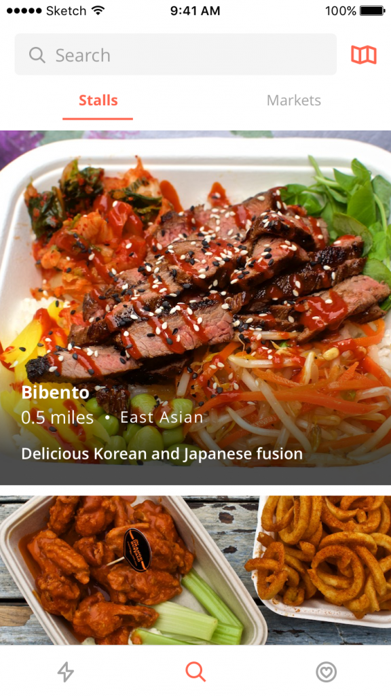
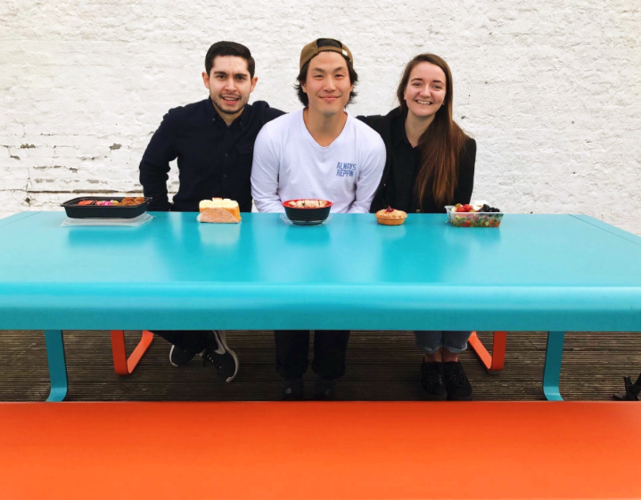
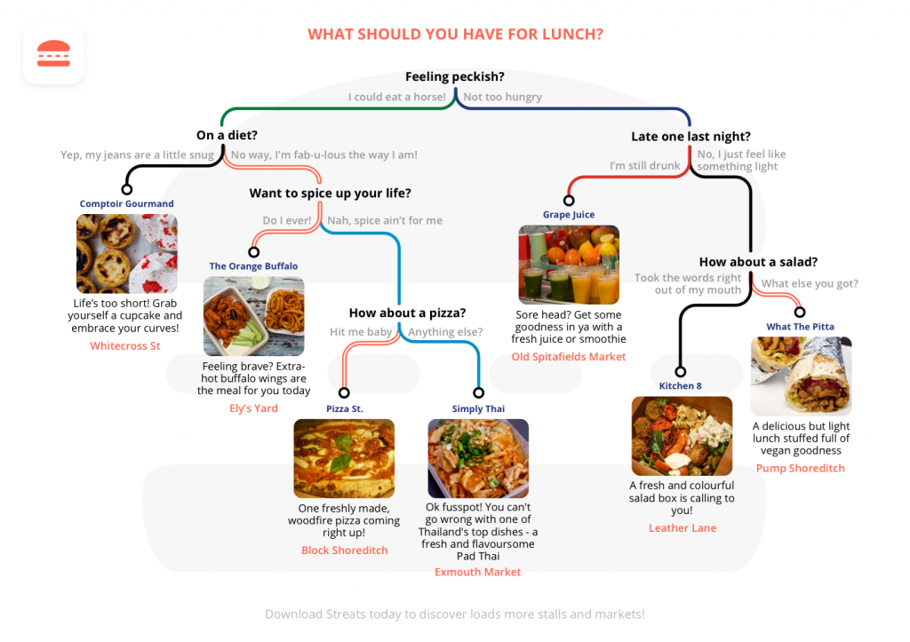

If there’s one thing the team at Borne Digital love just as much as tech, it’s food. We are a bunch of foodies and instead of visiting the usual chains at lunch, we like to branch out. Friday lunchtime sees us exploring new street food stalls and trying as many different meals as we can. Whether it’s tacos, Brazilian BBQs, Thai curries or falafel wraps – between us we have probably eaten every cuisine in London!
It was only a matter of time before we decided to combine our love of street food with mobile app development. We realised there was actually very little in the way of apps to point us to new and exciting street food. So, we took matters into our own hands and began to brainstorm ideas for our latest in-house app, Streats.
We swiftly hired Content Manager Charlie, who has that rare talent of making a photo of a 3 day old pizza look appetising. He’s a true whizz behind a camera and has worked for a street food YouTube channel back in Sydney. With an (albeit small) team in place, it was time to get started on the content.
Content Curation
We knew we wanted to get this project launched in time for Spring, the time of the year when everyone emerges from their dark offices filled with hope, only to be blinded by the sunlight and burnt to a crisp in approximately 6 minutes. If there is ever a time to launch an app for Londoners, it’s in line with warmer weather, some short-lived optimism and the termination of January’s no-carb diet.
For this reason, we had to be speedy. Charlie headed out every day on his bike to visit the various markets around our area of London. He photographed the delicious food, chatted to the stall owners, heard the stories and inspiration behind their creations and, of course, tasted a lot of food.
Once Charlie had covered the markets in East Central, we began heading further afield, while simultaneously putting the content together for the app – editing the photos and writing stall descriptions. While the content was being created, our app designers and developers got to work on the UI and UX; a task that saw us faced with one of our biggest challenges so far – following our own advice.
UX/UI
Time and time again we see clients trying to make their app too complicated, and it is our job to encourage them not to get carried away when it comes to the app’s features. You’ve probably heard the term MVP, or minimum viable product, and this was something we had to keep coming back to while brainstorming ideas and designing features and screens for Streats. I guess what we’re saying is, well, we finally know the struggle! The temptation to add in a few extra features was strong, but we’re proud to say we stuck to our guns. The finished UI and UX designs were simple, easy to navigate and allow the actual content to do the talking – Charlie’s beautiful photographs. The best part? We have plenty of room to expand, monetize and grow the app based on real user feedback and not just our potentially biased opinion of how Streats should be.

Marketing
We know the importance of social media when it comes to marketing a product (we write blogs on this topic pretty much every week), and with a platform as visual as Streats, there was no doubt we would have to utilize Instagram to get people interested. However, we also wanted to do something a bit different to help us stand out from the foodies dominating social media. So, we decided we would have a crack at some old-school flyers, alongside making our very own promo video. After all, any publicity is good publicity right?
The Promo Video
We decided to do a promo video. Yes, I know this is starting to sound more and more like an episode of The Apprentice, but bare with us. Now, none of us are actors, but we like to think we’re a reasonably attractive bunch (or at least we were before all the street food took it’s toll), so we decided to create and star in our own commercial. Really, what is there to lose?
Well, aside from our dignity, not much. So, we brainstormed, we ate some food, we brainstormed some more and we came up with an idea for our very own promo video. We spent a sunny (ish) Thursday on the roof of our office building; filming, moaning about how hungry we were, and promising leftover street food to anyone who told us we weren’t allowed to be up there.
As is the nature of the film industry, a two hour task took eight and by the time we had finished recording we couldn’t have eaten the leftover food without risking a serious bout of salmonella.
The finished product will be up on our social media sometime this week, so make sure you follow our Twitter and Instagram to get first look!

Flyers
Anyone who hands our flyers on a regular basis will know this – unless you’re handing out free food, people will avoid you like the plague. Whilst we love to think that Streats sells itself and that passers by will actually be queuing up to get our fliers, this just isn’t true. London is a notoriously grumpy city and the reality is, we’re going to have to reel people in with free food and pray that no one chucks our flyer into the next bin they see.
When it came to designing the flyers, we decided interactive was the way forward. Yes, you can spout some crap about your app and how great it is (a bit like we’re doing in this blog post), but people don’t want to read that. They want free food, and they want something that might distract them from the misery of their Monday morning. So, we came up with a quiz.
We’re yet to face the mean streets of London with our flyers (this is due less to the fact that the streets are ‘mean’ and more because we simply haven’t had time), but we will let you know we get on. If you’re lucky you might catch us around Old Street underground handing out a little treat to passers-by. Do us a favour and don’t throw the flyer in the bin. Thanks.
The Finished Product
We are so happy to announce that Streats is now live on the App Store! Download to discover the best street food in London and please let us know what you think. It”s been a great journey for the Streats team, and it’s only just beginning!
Download Streats on the App Store